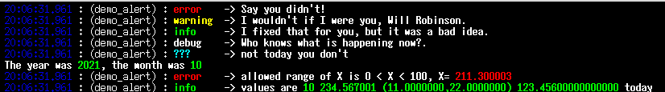

M_attr

Name
M_attr - use in-band signaling to control the text attributes, formatting, color, and other output options on ANSI video text terminals
Description
M_attr(3f) is a Fortran module that writes common ANSI escape sequences which control terminal attributes like text color. It is designed to allow the sequences to be suppressed and for the user program to completely customize it – the user can add, delete and replace the sequences associated with a keyword without changing the code.
Functional Specification
Attributes are specified by writing lines with HTML-like structure.
This is how the interface works –
Call the attr(3f) function with strings that include syntax like “\<attribute> My regular text \</attribute>” and the “attribute” and “/attribute” names will be replaced with ANSI escape sequences or user-defined strings associated with those keywords.
program demo_M_attr
use M_attr, only : attr
print *, attr('<GREEN><bold><white> Hello World!</white></bold></GREEN><reset>')
! or
print *, attr('<G><bo><w> Hello World!')
end program demo_M_attr

Documentation
User
All documents are contained in the docs/ directory including archive files of man(1) pages that can be installed on ULS (Unix-Like Systems).
If your browser supports Javascript you can view all the procedure descriptions in an amalgamated book form that can easily be printed or viewed as a single document: - book
Which is also available as indexed HTML documents - index or simply as HTML - M_attr – An overview of the M_attr module - attr – the main function - attr_mode – setting processed or plain output mode - attr_update – customizing - alert – standard INFO, WARNING, ERROR format 
real man-pages

Documents may be installed as man-pages on Unix-like systems with a man(1) command:
Developer
doxygen
ford
Download and Build

gmake
bash
git clone https://github.com/urbanjost/M_attr.git
cd M_attr/src
# change Makefile if not using one of the listed compilers
make clean; make gfortran # for gfortran
make clean; make ifort # for ifort
make clean; make nvfortran # for nvfortran
This will compile the M_attr module and example programs.
fpm
Alternatively, download the github repository and build it with fpm ( as described at Fortran Package Manager )
bash
git clone https://github.com/urbanjost/M_attr.git
cd M_attr
fpm test
or just list it as a dependency in your fpm.toml project file.
[dependencies]
M_attr = { git = "https://github.com/urbanjost/M_attr.git" }
Demo Programs

The included demo programs provide templates for the most common usage:
- default - simple demo setting color
- custom - how to add, delete, and replace attribute strings
-
mixed - multiple modes and mixed attributes
-
dump - dump the dictionary. Intended for debugging but might be generally useful.
-
message - using pre-defined message prefixes of various types
-
redirect - a complete little application showing how to call ISATTY(3f) in gfortran(3f) and ifort(3f) to automatically turn color off when output is not to a tty device.
-
plain - a simple filter program that strips “raw mode” output back to plain text
-
color - a filter program that displays a “raw mode” input file in color (or displays command line arguments). So you can read in a file generated in “raw” mode and display it in color, or use it for testing commands or for adding color from scripts:
light "<clear><WHITE><blue><bold> WARNING: <reset> that would not be prudent"
A Basic Introductory Program
This short program will display colored text on an ANSI-compatible color terminal or terminal emulator:
program demo_M_attr
use M_attr, only : attr, attr_mode
write(*,'(/,a,/)')attr('<GREEN><bold><white> COLOR <reset>')
call printme()
write(*,'(/,a,/)')attr('<G><bo><w> DO THE SAME THING IN "PLAIN" MODE')
call attr_mode(manner='plain')
call printme()
contains
subroutine printme()
write(*,'(3x,a)') attr('<W><bo><r> ERROR </W> This should appear as red text</y>')
write(*,'(3x,a)') attr('<B><bo><y> WARNING </B></y> This should appear as default text')
end subroutine printme
end program demo_M_attr

Note:
where supported the isatty(3f) function can be used to turn off the sequences when the file is not a tty. isatty(3f) is an extension, but supported by GNU, Intel, PGI, …
History
References
- Fortran Wiki example for an example that covers the basics
- Rosetta Code examples for how other languages do color. I find the Ncurses, Fortran, bash and C++ examples particularly interesting.
- Wikipedia a description of the basic ANSI escape sequences.
- Fortran Standard Library project discussion about adding ANSI control sequences to the Fortran Standard Library project.
- terminal colors
Of Interest
- ansi2html ANSI escape codes to HTML from programs and as a bash shell
Alternatives
- M_ncurses A Fortran interface to Ncurses(3c)
- M_escape A multi-mode exploratory version from which M_attr(3f) evolved
- FACE A Fortran library for generating ANSI escape sequences
- foul A library for controlling the attributes of output text using Fortran
Other Languages
- python prompt-toolkit